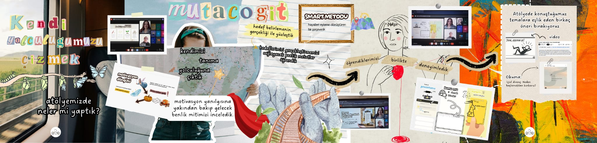

Atölyelerimiz
Kendinizi keşfetmek, yeni yetenekler kazanmak ve beraber üretmek için atölyelerimizde buluşalım.
09
Ekim
2025

Zihninin Ritmini Duy
Kendini tanımak, çoğu zaman sosyal medyada bir “görev listesi” gibi anlatılır: yap, tamamla, geç… Oysa kendine yaklaşmak, bitirilmesi gereken bir iş değil; sabırla, bazen tökezleyerek, bazen de şaşırarak ilerlenen bir yolculuktur.
Detayları Gör
08
Kasım
2025

Kendi Yolculuğunu Çizmek
Önümüzde sayısız yol uzanırken hangisinde yürüyeceğimizi seçmek, kendi rotamızı çizmek istesek de nereden başlayacağımıza karar vermek her zaman düşündüğümüz kadar kolay olmaz.
Detayları Gör